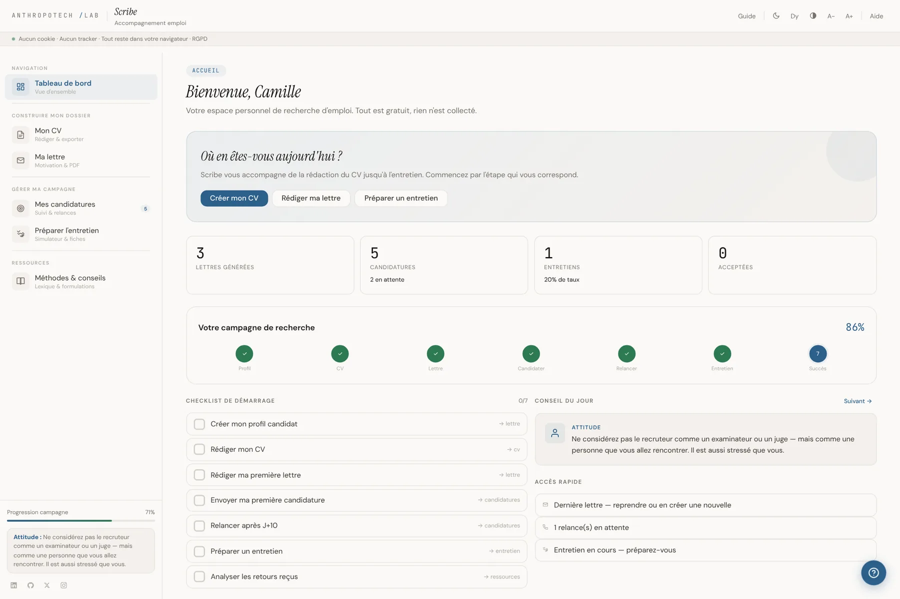
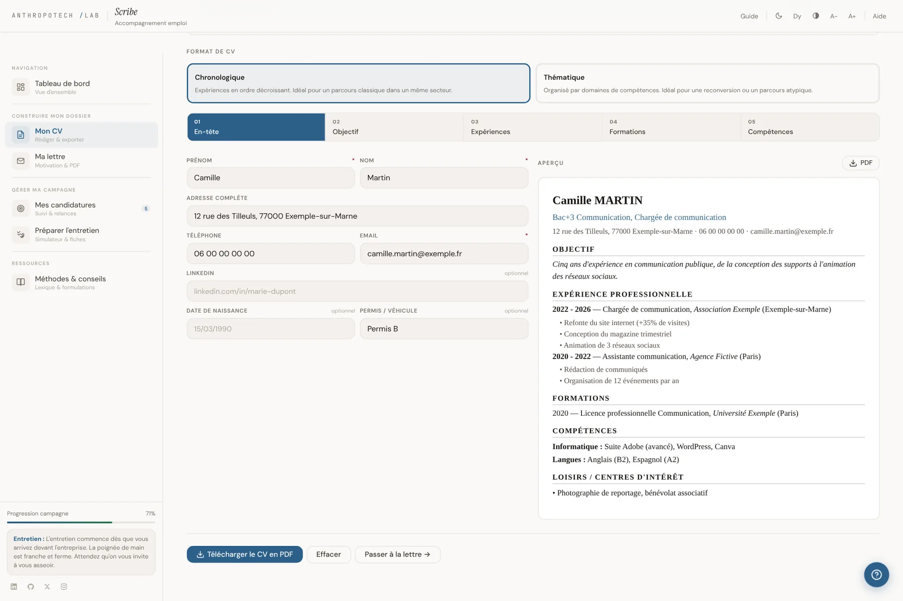
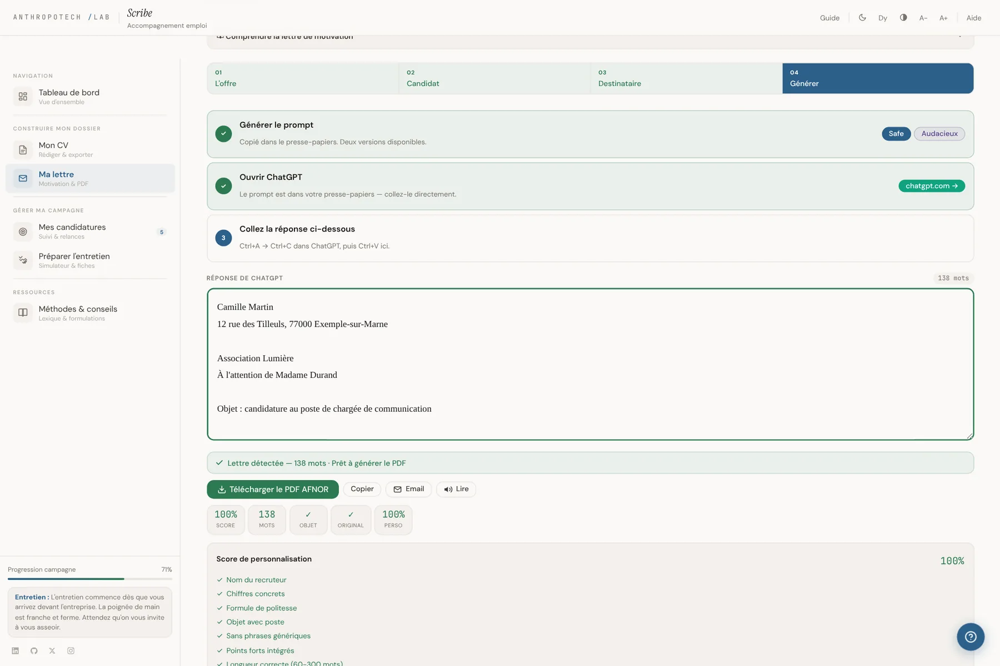
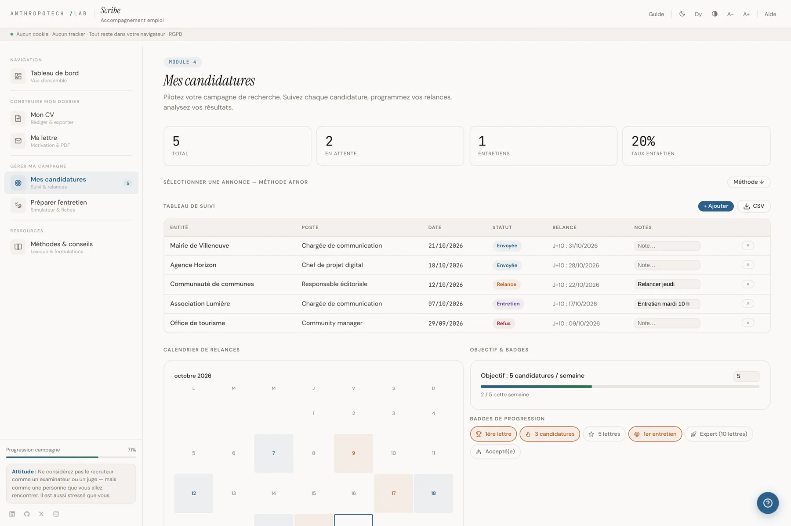
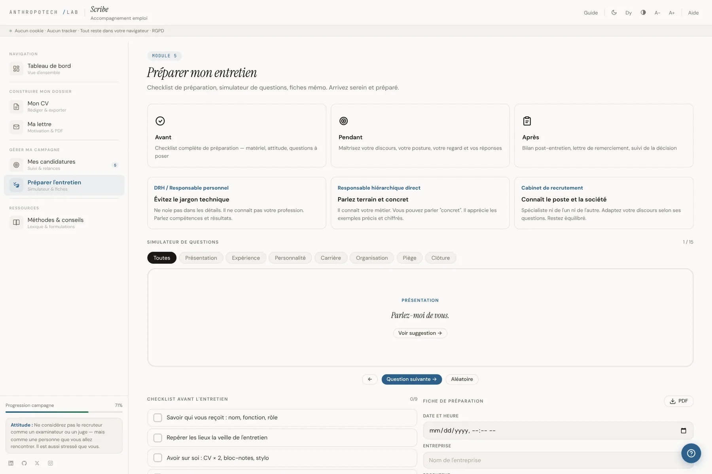
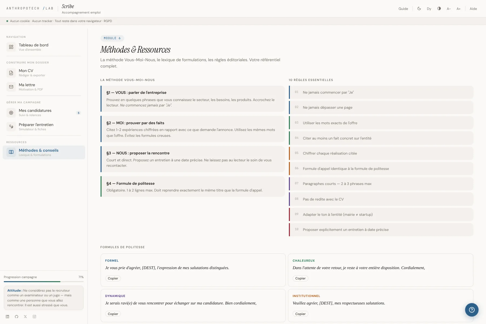
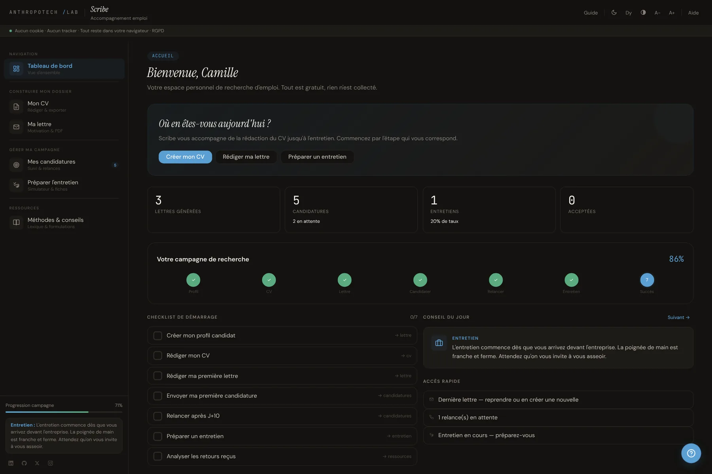

Mon CV
Un CV qui se lit en dix secondes.
Chronologique ou thématique, section par section, avec l'aperçu qui se met à jour à chaque frappe. Un clic, et le PDF est prêt.
- Le titre, premier critère de tri des recruteurs
- Des conseils à chaque section
Accompagnement emploi · gratuit · sans compte
Du CV à l'entretien, chaque étape de la recherche d'emploi. Rien n'est collecté.

Un CV écrit à la hâte. Une lettre qui commence par « Je ». Une candidature envoyée, puis oubliée. Scribe reprend chaque étape, de la première ligne du CV jusqu'à la relance, et aide à bien la faire.
Scribe suit la progression du profil jusqu'à la réponse, comme sur son tableau de bord. Chaque étape franchie se coche.
page 1 / 5
Mon CV
Chronologique ou thématique, section par section, avec l'aperçu qui se met à jour à chaque frappe. Un clic, et le PDF est prêt.
Ma lettre
Scribe prépare une consigne précise pour ChatGPT à partir de l'offre et du profil. La réponse collée devient un PDF mis en page, avec un score de personnalisation.
Mes candidatures
Chaque candidature a son statut, sa date de relance et ses notes. Le calendrier montre quand relancer, les badges marquent les progrès.
L'entretien
Un simulateur de questions classées par thème, une checklist, une fiche de préparation et un bilan à remplir après l'entretien.
Méthodes
La méthode Vous, Moi, Nous, dix règles essentielles, les formules de politesse et une bibliothèque personnelle de formulations.





La lettre
Le PDF reprend la présentation classique de la lettre française, inspirée de la norme AFNOR NF Z 11-001.
Nom, adresse, e-mail et téléphone en haut à gauche. Le lieu et la date en haut à droite.
Le bloc du recruteur est placé à droite, à 90 mm du haut de la page, avec son nom et sa fonction.
L'objet annonce le poste. Le corps suit la méthode : l'entreprise, le profil chiffré, la proposition de rencontre.
La formule de politesse reprend exactement la civilité du début : Madame, Monsieur, ou Madame, Monsieur. Puis la signature.
Un CV et une lettre contiennent des informations personnelles. Scribe a été pensé pour qu'elles restent entre vos mains.
CV, lettres, candidatures, bilans d'entretien et formulations sont enregistrés sur votre appareil, dans votre navigateur.
Pas d'inscription, pas de serveur qui garde vos documents, aucun cookie, aucun traceur, aucune publicité.
Pour la lettre, Scribe prépare une consigne que vous collez vous-même dans ChatGPT. Elle contient votre nom et vos coordonnées : relisez-la avant de l'envoyer.
Une fois collée, ce sont les règles d'OpenAI qui s'appliquent, pas celles de Scribe.
Faites glisser le curseur : Scribe passe en mode sombre. D'autres réglages adaptent l'affichage à chacun.

SombreClairÀ vous d'écrire
Ouvrez Scribe dans votre navigateur. Pas d'inscription, pas d'installation : le tableau de bord vous attend.